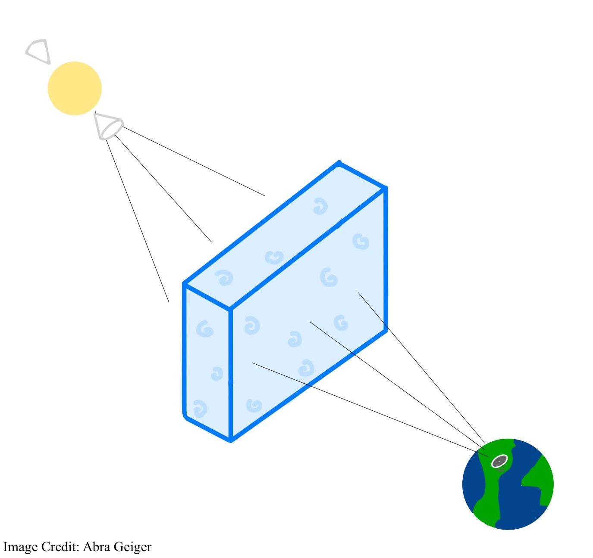
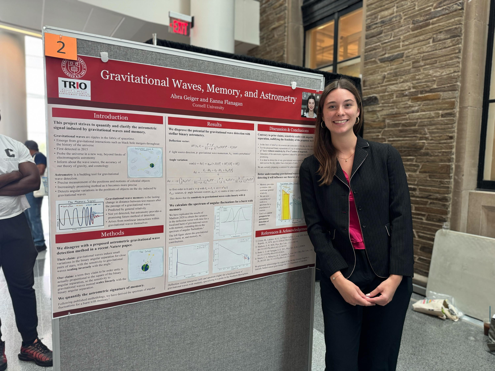

Current Work
In June 2023, NANOGrav (the North American Nanohertz Observatory for Gravitational Waves), among other PTAs, provided very strong evidence for detection of the nanohertz gravitational wave background. This background is theorized to originate from a symphony of supermassive binary black hole mergers. With improved timing precision and more pulsars, we will be able to resolve the signals of individual mergers.
The interstellar medium (ISM), which is the turbulent gas and dust in space, induces propagation effects for pulsar signals. These effects limit the precision of pulsar timing, and improved understanding is necessary. As a NANOGrav Junior Member, the focus of my current research is scattering, temporal broadening of a pulsar signal due to diffraction through variations in electron density in the ISM. Through analysis of scattering, we improve pulsar timing and better understand turbulence in the ISM along the line of sight. We have recently had a paper published in the Astrophysical Journal on this work found here.
I spent summer 2024 at Caltech, conducting a research project focused on the circumgalactic medium (CGM) under the mentorship of Professor Vikram Ravi entitled "Tracing the Milky Way Circum-Galactic Medium With Optical Spectroscopy". The CGM is the gas and dust surrounding our galaxy, and it informs our understanding of galaxy evolution.
Since January of 2025, I have also been working with Professor Eanna Flanagan at Cornell on theoretical research related to gravitational waves. I am working on a senior thesis focused on quantifying the potential for detection of gravitational wave memory, which arises from non-linear interactions within gravitational waves themselves, resulting in a lasting change in distance between test masses after the passage of a wave, with astrometry, which is the science of precise measurement of the positions and motions of celestial objects. I spent the summer of 2025 working on this project, as well as research on gravitational waves and astrometry more generally. This culminated in a formal comment quantifying and correcting a critical error found in a Nature publication.
Presentations and Publications
Publications:
Select Presentations:
See more here.
My Interests
As of now, I am interested generally in the origin, evolution, and fundamental behavior of the universe. I am passionate about my current research, because the gravitational waves that NANOGrav has detected probe an abundance of physics including cosmologcial inflation, general relativity, dark matter, and more. Additionally, I am interested in mapping the local interstellar medium and understanding its turbulence in more detail.

